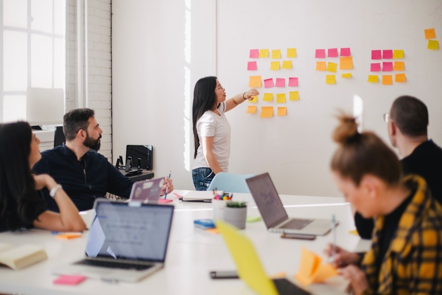
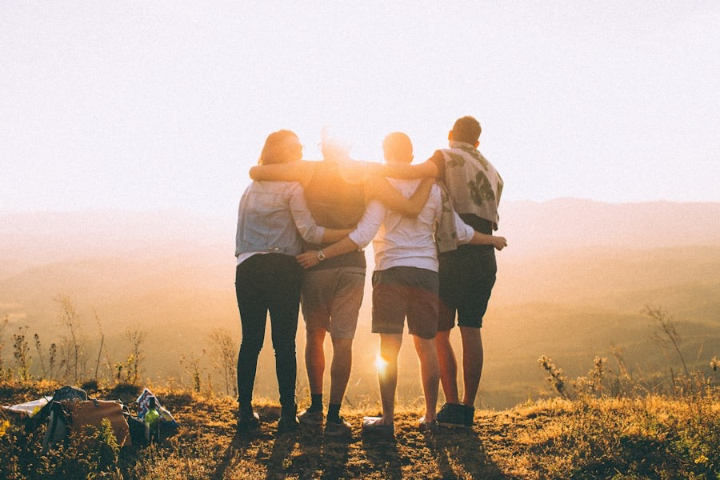
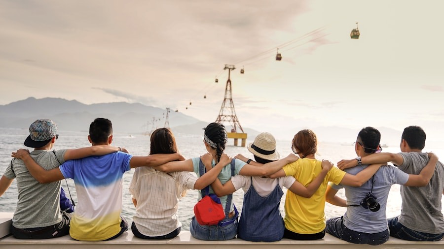

In Preparation
🇹🇷 Yalova, Türkiye
Youth & Urban Futures
A planned initiative connecting young people interested in sustainable urban development and civic innovation — currently in concept phase.

In Preparation
🇹🇷 Yalova, Türkiye
Youth for Sustainability
A local workshop series exploring environmental awareness, climate literacy and sustainable lifestyles among young people in Yalova.

In Preparation
🇹🇷 Yalova, Türkiye
Digital Literacy & Citizenship
A planned program supporting media literacy, responsible digital communication and online civic participation.

Concept Phase
🇹🇷 Türkiye · 🇩🇪 Germany (target)
First Youth Exchange
An early-stage concept for our first bilateral youth exchange — exploring shared topics around civic participation and intercultural dialogue.

Concept Phase
🇹🇷 Türkiye · 🇩🇪 Germany (interest)
Intercultural Dialogue Program
A concept for structured cultural exchange between young people from Türkiye and Germany — building mutual understanding through shared creative activities.

Concept Phase
🇹🇷 Yalova, Türkiye
Youth Civic Participation
A planned local program supporting young people\'s engagement with civic processes, local governance and democratic participation in their community.